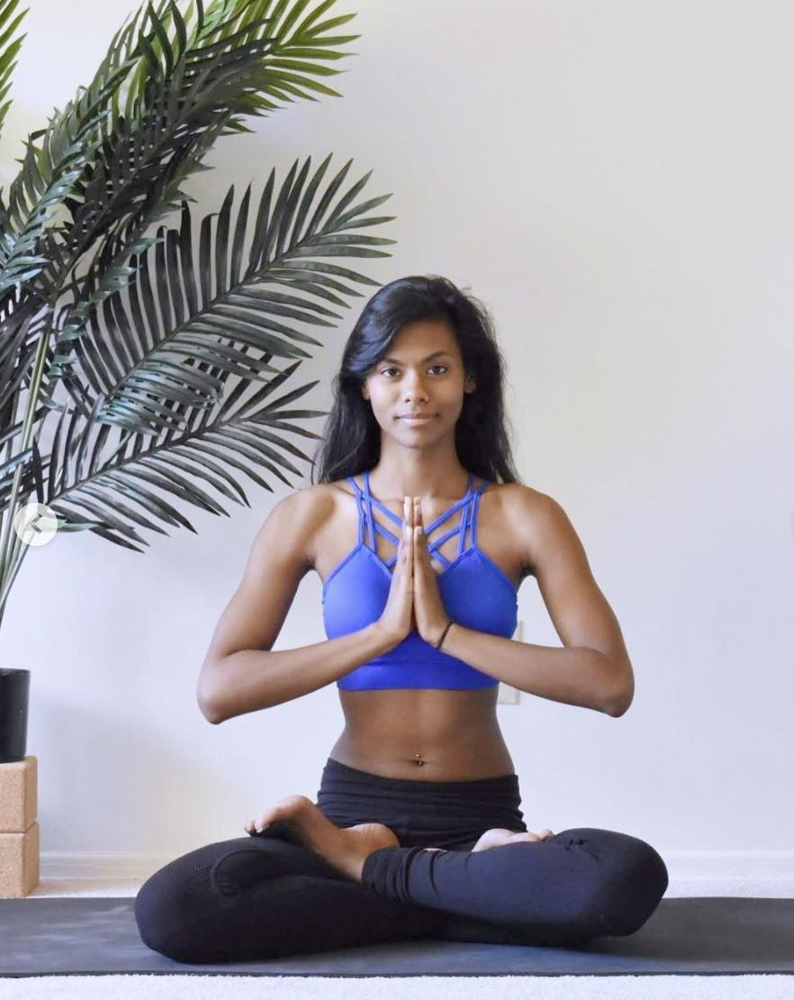

Some studies show that yoga can
alleviate different forms of depression so why not try this cold season in case you're feeling blue? Maybe you haven't
tried it because it seems like it is a fad or for a more common reason: you think you're not flexible enough.
Well, I'm here to tell you to forget about all your misconceptions about yoga. Yoga can be amazing for your health.
It's definitely not a fad and for that, I have two reasons:
- I have been practicing almost 11 years and guiding classes for almost two. My life isn't perfect but yoga definitely makes it easier.
- Yoga has been around for 5000 years. It's definitely changed, especially since the concepts were brought to the West.
Even though it's been marketed as a practice that only contortionists can do, and it's had ridiculous additions
to it (ever heard of hot yoga, beer yoga, or goat yoga?) simple yoga that is practiced mindfully can truly be for everyone.
And with the cold months coming upon us, it is especially important that we take care of all aspects of our health.
Try some simple yoga.
Yoga isn't just a bunch of flexible and strong poses. It's about learning to be intuitive with your mind and body.
It doesn't matter if you can't handstand while doing a split with your legs. Can you take a few minutes in a quiet space
to move, with your breath to guide you? Can you let your body and mind be soft while you’re doing so? You definitely can,
and that can be your yoga practice. Yoga also includes meditation, whether it's sitting or lying down in a comfy
position and focusing on de-stressing your thoughts.

Here's a super simple 10 minute routine with a guided meditation. Try it this season and see how you feel:
Find a quiet space with enough room for you to move and explore your body. Start by sitting in your most comfortable
seat. Before adjusting your position, take notice if you’re slouching or sitting up too tall. If you're doing either of
those things see if you can adjust your posture so that you're sitting with more of a neutral spine. Now breathe deeply.
Take a big inhale through your nose, let the breath travel down the back of your throat and let it come back up taking a
big exhale through your nose. Take this a few times at your own pace, gently closing your eyes, and letting any thoughts
coming into your head just pass by. Rather than trying to empty your mind, just take a note that you have these thoughts
and try not to dwell on them right now.
Do a mental scan of your body from head to toe to see if there's any part that is holding tension that you can soften
up. Maybe there's a crinkle between your eyebrows or in your nose. Or maybe your jaw feels tight. Maybe there's some tension
in your shoulders, fingers or toes. If you find anything like that see if you can let that tension go and replace it with
softness. Letting your facial expression be relaxed, fingers and toes dangle and letting your shoulders drop down if they
were shrugged up a little tight.
Now take a big inhale, start to move your arms up so your fingers are reaching for the sky - maybe interlacing them
so palms can face the ceiling, giving yourself a nice gentle stretch. Slowly bring your arms to your side take a nice
deep exhale. Come on to your hands and knees, wrists under the shoulders, knees under the hips. Make sure both arms
are shoulder width apart, as are both of your knees. Inhale, arch your back, maybe look up. Exhale, gently soften,
and round your back. Do this a few times at your own pace. Whenever you’re ready, come to sit on your feet and take a
child's pose. Continue to breathe deeply here perhaps using the same technique we used at the beginning of this practice
with our throats. Stay here as long as you need, letting your whole body be soft. Again, if you have any thoughts crowding
your mind just let them pass by and take a note that they are there.

I hope you try this and it helps you feel a little better in this upcoming cold season. If you’re curious and
want to know more, please feel free to reach out. I'd love to chat! Thank you and Namaste.

Image courtesy of @shukieyoga.